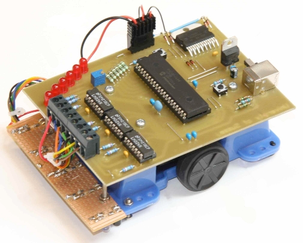
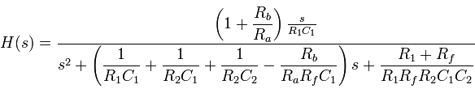
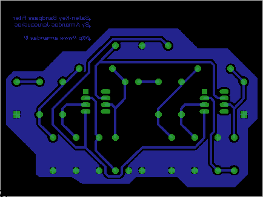

Šiais metais departamentas suorganizavo barbekju. Šiandien man buvo paskutinis egzas (tikiuos), tai galėjau labai šauniai užbaigti mokslo metus.
Niekaip negaliu atsidžiaugti tokia iniciatyva, nes laiką praleidom tikrai smagiai. Gavom nemokamo maisto, mokamų gėrimų, pažaidėm biliardą, paspardėm kamuolį ir žinoma pabendravom su kolegom. Kas labai smagu, kad susirinko ne tik kursiokai, bet ir jaunesni, vyresni studentai, keletas dėstytojų.
Šį trimestrą univiere darėm du projektus: liniją sekantį robotą ir skaitmeninį termometrą. Robotas, nors ir keistai nuskambės, buvo programinės įrangos projektas. Mes nedarėme geležies dizaino, tiesiog susilitavome duotas dalis. Pagrindinė užduotis buvo parašyti programą, kuri tą robotą valdys.
Roboto smegenys - PIC18F4450 mikrokontroleris. Linijos aptikimui naudojami 5 IR diodai ir 5 IR fotodiodai. Kūnas kažkoks kinietiškas, du ratai varomi DC motoriukų. Motorai valdomi naudojant L298 draiverį.
Robotas programuojamas per usb. Mikrokontroleryje sukasi USB HID bootloader'is iš Microchip. Kompiliavom su C18 kompaileriu, o hex kodą į mikro kėlėm su programa iš to pačio Microchip.
Iš pradžių dar bandžiau susirasti Linux programas, bet nepavyko rasti hex uploaderio. Daėjau iki to, kad skaičiau libusb dokumentaciją, bootloaderio kodą ir snifinau paketus :D Šiaip sakyčiau gan neblogai pavyko (dar neveikia), ypač kai neturėjau jokios normalios specifikacijos. Jei atiduos robotus pabandysiu gal per vasarą pratęst.
Surininktas robotas atrodo maždaug taip:

Veiksmo univiero trasoje kažkaip nenufilmavau, bet šiame video matosi kaip robotas veikia.
Šiandien yra paskutinė pavasario trimestro diena. Turbūt įdomiausias dalykas, kurį darėm šį trimestrą - filtro dizainas. Filtras ne kažkokius tepalus filtruoja, ir ne cigaretės dūmus, o dažnius.
Kiekvienas studentas galėjo pasirinkti kokį filtrą nori statyti. Aš užmačiau, kad apie Sallen-Key topologiją internete yra šiek tiek informacijos ir ją pasirinkau. Dar galėjau rinktis dažnius bei tipą. Pasirinkau juostinį (bandpass) filtrą su 50-100Hz intervalu, nes įsivaizdavau kaip jungsiu jį prie sub'o :D
Sekantis žingsnis buvo lygčių sprendimas. Nelabai man jis patiko. Reikėjo išspręsti tokią vat lygtį:

Po įvairių prielaidų beliko surasti tik rezistorių santykius. Taip iki galo ir nesupratau visų principų.
Po to sekė įdomesnė dalis – darbas su eagle. Schematiką susidėlioti buvo lengva, mano meniniai sugebėjimai pasireiškė kuriant plokštės takelių išdėstymą:

Šį meno kūrinį atsispausdinau ant skaidrės ir atidaviau technikams. Šie buvo labai malonūs ir leido stebėti procedūrą. Visas procesas yra panašus kaip aprašyta pas circuit. Technologoja gal šiek tiek mandresnė, ko pasekoje plokštė buvo baigta per 10-15 minučių.
Pagaminta plokštė
Beliko viską sulituoti:
Bei ištestuoti. Testavom su osciloskopu, bet mano ranka pieštas atsakas (frequency response) neatrodo įspūdingai. Vietoj to įdedu kompiuterinės simuliacijos rezultatus:
Monte Carlo analizė rodo kokio nuokrypio galima tikėtis jei visų komponentų reikšmės kistų penkiais procetais (5% tolerance).
Šiandien turėjome paskutinę laboratorijos sesiją šį trimestrą. Ši kartą sekėsi žymiai geriau nei praėjusį. Paskutinių dviejų lab'ų topikas buvo 741 Operacinis stiprintuvas. Per pirmąją sesiją lipdėm high-gain stiprintuvą (tas buvo niekų darbas), o per antrąją Wien BridgeOscillator. Kadangi labai pasistengėm, tai turėjau galimybę pabaigti litavimo darbus namie, o laboratorijai turėjo likti tik tyrimai. Sakau turėjo, nes eilinį sykį ne ten įlitavau varžą :D Na bet šitas bug'as buvo greitai aptiktas ir ištaisytas, grandinė patikrinta ir laboratorinis baigtas. Žemiau matosi mano ir kursiokės darbo vaisius:
Grandinė yra labai primityvi, ko pasekoje atsiranda nestabiliumas. Vien tam, kad išgauti sinusoidę, reikia labai tiksliai pasukti potenciometrą (tas mėlynas su rodykle), lyg to būtų maža, vos prilietus rezistorių pirštu (suprask: pašildžius), sinusoidė pradeda nykti :). Na, bet čia tik pradmenys :)
Dar žemiau, matosi mūsų darbo vaisiaus darbo vaisius — ideali sinusoidė:
Bedarydamas darbą, galvojau ką čia su tokiu daiktu galima nuveikti. Į galvą iškarto atėjo mintis apie FM, bet kaip suprantu toks oscilatorius nelabai tinka. Kaip ten bebūtų, manau koks nors FM siųstuvėlis būtų visai smagus projektas ateičiai.
Taip bemąstant kilo ir dar viena mintis: kažkaip labai mane traukia ta visa komunikacijų elektronika. O studijuoju šiuo metu kompiuterines sistemas. Būna, žmogus jau antram kurse, o visdar nežinai ko nori :D Kitą trimestrą turėsim kursą "Microprocessor Applications", tai tikiuosi šitas dalykas bent kiek praskaidrins abejones.